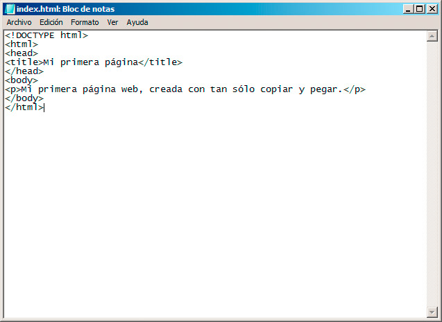

Las páginas web mantienen una estructura muy sencilla que debemos respetar, para que los navegadores sean capaces de presentarla. No podemos comenzar nuestra página con una etiqueta de párrafo, por ejemplo, sino que debemos indicar qué tipo de página estamos generando, qué información adicional llevará y dónde comienza el contenido que debe ser mostrado.
De este modo, cualquier página web incluirá al menos las siguientes etiquetas:
- <html> y </html> colocadas al principio y fin del documento indican dónde comienza y finaliza la página web.
- <head> y </head> definen un espacio en el que incluiremos contenidos que no se van a mostrar directamente en el navegador, sino que sirven para describir determinados aspectos del documento, como su título, autor, los estilos que emplearemos, pequeñas funciones que se deben realizar, etc.
- <body> y </body> en su interior se incluye la información que se mostrará en el navegador. Es el contenido real de la página, estructurado mediante las diferentes etiquetas.
Junto a las tres etiquetas anteriores podemos encontrar algunas más que son importantes para que la web se interprete correctamente:
- <!DOCTYPE> y <?xml> son dos etiquetas que indican qué tipo de documento estamos generando y a qué normas se ajusta. Normalmente serán siempre iguales y será nuestro editor el que se encargue de colocarlas al principio de la página, cuando sea necesario.
Con todo lo anterior, una página creada desde cero y con un breve contenido quedaría de la siguiente manera:
<!DOCTYPE html>
<html><head>
<title>Mi primera página</title>
</head><body>
<p>Mi primera página web, creada con tan sólo copiar y pegar.</p>
</body></html>
Eso es todo. Ya tenemos diseñada nuestra primera página web.
Probando la página web
Vamos a intentar probar nuestra página anterior siguiendo estos pasos:
1. Abriremos un editor de texto sencillo, como el "Bloc de notas" en Windows o el "Editor de textos" de Linux. En su interior copiaremos y pegaremos el texto anterior o bien lo escribiremos desde cero. En este segundo caso debemos prestar mucha atención, para no escribir mal ninguna etiqueta.

2. A continuación guardaremos la página web en alguna carpeta de nuestro ordenador. El nombre del archivo debe terminar en .html o en .htm. Así, podemos emplear el nombre index.html, que es el que se suele asignar siempre a nuestra página web principal.
Nota: Los nombres de los archivos de las páginas web deberían escribirse siempre en minúsculas, sin espacios y sin caracteres especiales, reduciéndolos a letras y números y, si acaso, algún guión alto o bajo. De ese modo no tendremos problemas al subir nuestras páginas a un servidor web.
3. Usando nuestro explorador de archivos, accederemos a la carpeta en cuestión; debemos tener a la vista el archivo y podremos hacer doble clic sobre él para que se abra dentro de nuestro navegador.
Si todo ha ido bien, veremos una página web en nuestro navegador. Aquí han sucedido muchas cosas que se pueden ir destacando:
- El navegador no muestra el texto que hemos escrito en el documento html; sólo el contenido que aparece dentro del <body>, del cuerpo de la página.
- En la pestaña podemos ver el título de la página, que coincide exactamente con lo que establecimos mediante el elemento <title> incluido en la cabecera de la página (<head>).
- Merece la pena fijarse en la URL de nuestra página web, es decir, la dirección única. Como nuestro archivo no está colocado en Internet o en un servidor, la dirección no comienza con http://, sino que veremos que empieza con file:// seguido de la ruta necesaria para llegar al archivo.
Aquí podríamos dar por concluido nuestro trabajo. Si hemos comprendido cómo funciona el modelo de etiquetas y de prueba en el navegador, sólo nos queda comenzar a conocer diferentes etiquetas para que los documentos se muestren tal y como nosotros queremos.
Con esta prueba ha quedado demostrado también que el uso de un editor más sofisticado es totalmente opcional, aunque la realidad es que se simplifica notablemente la incorporación de etiquetas, sobre todo aquellas que no se usan con frecuencia.
Pregunta de Elección Múltiple
Cuando elaboramos un archivo HTML, ¿qué nombre y extensión hay que dar a dicho archivo?
|
Index.htm
| |
|
Un nombre cualquiera más la extensión .htm
| |
|
Un nombre cualquiera más la extensión .html
| |
|
Las opciones b y c son correctas
|